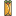

Tarea 1.2
Desarrollo de Aplicaciones Webs
Manuel Alava
list.io
Frutas
Manzana
Piña
Banana
Carnes
Carnes para unos Burridos de Asada

Pechuga
Salmón para Sushi
Verduras
Brocoli
Limón
Cebolla para los burritos